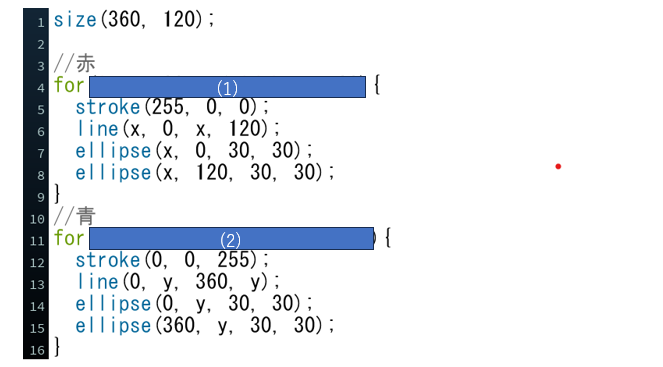
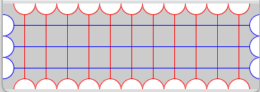

問題のコード
プログラム実行画面
問題文
上図は,円とそれぞれの円を線でつなぐプログラムです.
(1)for文を用いて,横に並んでいる赤い円と線を繰り返し表示させるプログラムを埋めてください.
ただし,int型の変数をxとして初期値は30,xがウィンドウの幅未満の場合実行し,ｘが30ずつ増加するようにしてください.
(2)for文を用いて,縦に並んでいる青い円と線を繰り返し表示させるプログラムを埋めてください.
ただし,int型の変数をyとして初期値は30,yがウィンドウの幅未満の場合実行し,ｘが30ずつ増加するようにしてください.
(1)(2)
繰り返しを用いる場合は以下のように記述する.
for(初期値をセット; 変数を評価; 変数の値の変化){
繰り返し実行されるコード
}
解答欄
(1)(int x=30; x (2)(int y=30; y